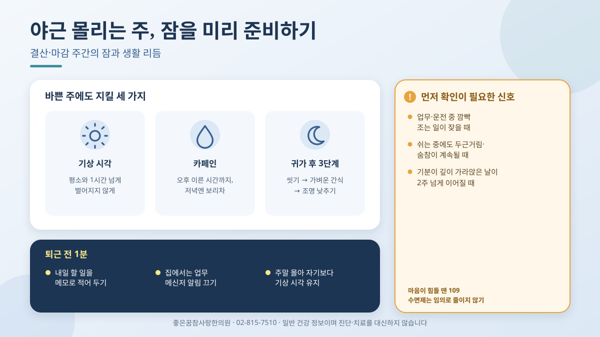

이종호 한의사 감수좋은꿈참사랑한의원 대표원장 (한의사 면허번호 19769)발행 2026-11-24 · 수정 2026-11-25
이 글의 차례
야근이 몰리는 주에는 잠드는 시각보다 일어나는 시각을 지키는 것이 잠을 덜 흔들리게 하는 데 도움이 될 수 있습니다. 장승배기와 대방, 노량진 쪽 사무실에서 일하시는 분들은 월말 결산이나 분기 마감, 연말 정산 시기가 오면 일주일 내내 늦게 퇴근한다고 하시는데, 바쁜 주가 끝난 뒤에야 잠이 무너진 것을 알아차리는 경우가 많습니다.
그래서 바쁜 주가 오기 전에 기상 시각, 카페인 마감 시각, 귀가 후 순서 세 가지를 미리 정해 두는 것부터 권합니다. 운전이나 업무 중 깜빡 조는 일이 잦다면 먼저 확인이 필요합니다.
왜 이런 불편이 생길 수 있나요
- 늦게 퇴근한 날에도 업무 긴장이 남아 있으면 누워도 머리가 쉬지 못해 잠들기까지 오래 걸릴 수 있습니다.
- 야근 중 마신 커피나 에너지 음료가 밤까지 남아 잠을 방해하기도 합니다.
- 바쁜 주에 기상 시각이 들쭉날쭉하면 하루 리듬이 흔들려 바쁜 시기가 끝난 뒤에도 잠이 돌아오지 않는 분이 있습니다.
- 늦은 저녁과 야식은 속을 불편하게 해 잠을 얕게 만들기도 합니다.
- 늦게 들어온 날일수록 혼자만의 시간을 찾느라 휴대폰을 보며 잠을 더 미루게 되는 분도 있습니다.
먼저 이렇게 여쭙니다
- 야근이 몰리는 시기는 보통 언제이고, 그 주에는 몇 시쯤 집에 도착하시나요?
- 야근할 때 커피나 에너지 음료를 하루에 몇 잔 정도 드시나요?
- 집에 도착해서 잠들기까지 보통 얼마나 걸리고, 그 사이에 무엇을 하시나요?
- 바쁜 주가 끝난 뒤 주말에 몰아서 주무시나요?
- 바쁜 주에 저녁 식사는 몇 시에, 어디서 드시나요?
일상에서 먼저 해 볼 수 있는 것
- 바쁜 주에도 아침 기상 시각은 평소와 1시간 넘게 차이 나지 않게 맞추기
- 카페인은 오후 이른 시간까지만 마시고 저녁 야근 때는 따뜻한 물이나 보리차로 바꾸기
- 귀가 후 '씻기, 가벼운 간식, 조명 낮추기'처럼 잠들기 전 순서를 세 단계로 짧게 정해 두기
- 다음 날 할 일은 퇴근 전에 메모로 적어 두고 집에서는 업무 메신저 알림 끄기
- 야근이 예정된 날은 저녁 7시 무렵 가벼운 한 끼를 먼저 먹고, 귀가 후에는 따뜻한 음료 정도로 마무리하기
- 바쁜 주가 시작되기 며칠 전부터 잠자리에 드는 시각을 미리 정해 두고 그 주에 지킬 것 한두 가지만 고르기
상황별 예시
- 예를 들어 장승배기 쪽 사무실에서 월말 결산을 맡아 마감 주마다 밤 10시 넘어 퇴근하고, 집에 와서 업무 메신저를 다시 확인하다 새벽 1시가 넘어서야 눕는 경우에는 메신저를 닫는 시각을 정하고 귀가 후 순서를 짧게 만드는 것부터 함께 정리합니다.
- 예를 들어 상도동에 살며 노량진역 근처 사무실로 출퇴근하는 분이 분기 마감 주에 저녁을 거르고 밤 11시에 배달 음식을 먹은 뒤 바로 눕는 경우에는 야근 전에 먹는 한 끼의 시각과 귀가 후 마무리 음료를 함께 이야기합니다.
- 예를 들어 연말정산 업무와 아이 돌봄이 겹쳐 퇴근 뒤에도 쉴 틈이 없는 경우에는 자는 시간을 억지로 늘리기보다 아침 기상 시각만큼은 지키고, 주말 오전에 짧은 휴식 시간을 따로 떼어 두는 방법을 함께 찾아봅니다.
스스로 점검해 보세요
- 바쁜 주가 끝난 뒤에도 잠드는 데 30분 넘게 걸리는 날이 일주일 넘게 이어진다
- 오후 늦게나 저녁 야근 때 커피나 에너지 음료를 마신다
- 집에 와서도 업무 메신저를 열어 보는 날이 많다
- 주말에는 평일보다 2시간 넘게 늦게 일어난다
- 밤 10시가 넘어서야 제대로 된 식사를 하는 날이 많다
- 누워도 목과 어깨가 굳어 있고 다음 날 일이 머릿속에서 계속 돌아간다
- 바쁜 주에는 술로 긴장을 풀고 잠드는 날이 있다
해당하는 항목이 많을수록 바쁜 주가 오기 전에 순서를 미리 정해 두면 도움이 될 수 있습니다.
한의원에서 함께 살필 수 있는 경우
- 바쁜 시기가 지나도 잠드는 데 오래 걸리는 상태가 이어지는 경우 잠의 모양과 생활 리듬을 함께 살핍니다.
- 야근이 이어지면서 소화가 더부룩하거나 입맛이 들쭉날쭉한 경우 식사 시각과 소화를 함께 살핍니다.
- 목·어깨가 굳어 누워도 긴장이 풀리지 않는 경우 몸의 긴장 정도를 함께 살핍니다.
좋은꿈참사랑한의원에서는 잠들기 어려운지, 자주 깨는지, 새벽에 깨는지 잠의 모양을 먼저 듣고 맥부터 짚어 본 뒤, 필요하다고 판단될 때 설진·복진을 더해 몸 상태를 살핍니다. 첫 방문에는 바쁜 시기의 하루 일정과 평소 일정을 나란히 놓고 어디서 리듬이 밀리는지 함께 찾고, 목과 어깨가 많이 굳어 있으면 그 부위도 살핍니다.
침이나 한약 상담 등 상태에 맞는 방법을 정하고, 귀가 전에는 바쁜 주에 지킬 기상 시각과 카페인 마감 시각처럼 생활에서 조절할 점을 한두 가지로 정리해 드립니다. 평일은 저녁 8시까지 진료하지만 마감 시각에 가까우면 상담이 짧아질 수 있어, 퇴근 뒤 오실 때는 방문 전 전화로 확인해 주세요.
얼마나 지켜보고 언제 상담할까요
- 바쁜 주가 끝나고 1~2주 안에 잠드는 시각과 일어나는 시각이 평소대로 돌아오면 생활 조절을 이어 가며 지켜보셔도 됩니다.
- 바쁜 주가 끝난 지 2~3주가 지나도 잠들기까지 30분 넘게 걸리는 날이 일주일에 사흘 이상이면 상담을 받아 보시기를 권합니다.
- 마감 시기마다 같은 일이 되풀이된다면 다음 바쁜 주가 오기 1~2주 전에 미리 상담해 순서를 정해 두는 것도 방법입니다.
- 운전이나 업무 중 깜빡 조는 일이 생긴다면 기다리지 말고 바로 확인을 받으세요.
이렇게 기록해 오시면 상담이 쉬워집니다
- 바쁜 주의 퇴근 시각과 잠든 시각, 일어난 시각
- 카페인 음료를 마신 시각과 양
- 귀가 후 잠들기 전까지 한 일(휴대폰, 업무 메신저, 음주)
- 바쁜 주가 끝난 뒤 잠이 돌아오기까지 걸린 기간
- 바쁜 주의 저녁 식사 시각과 야식 여부
이런 증상은 먼저 확인이 필요합니다
- 잠을 거의 못 잔 날이 이어지며 운전이나 업무 중 깜빡 조는 일이 잦은 경우
- 가슴 두근거림이나 숨참이 쉬는 중에도 계속되는 경우
- 기분이 깊이 가라앉아 아무것도 하기 싫은 날이 2주 넘게 이어지는 경우
복용 중인 수면제나 다른 약이 있으면 진료 때 먼저 알려 주시고, 처방한 의사와 상의 없이 줄이거나 끊지 않습니다. 잠을 거의 못 자는 날이 이어지며 기분이 깊이 가라앉거나 극단적인 생각이 든다면 혼자 견디지 말고 109에 바로 도움을 요청하세요.
함께 읽으면 좋은 글
- 연말 야근을 마치고 와서 '나만의 시간'을 찾느라 새벽까지 잠을 미룰 때는 어떻게 하나요?
- 자기 직전까지 업무 메신저를 확인하는 습관 때문에 머리가 쉬지 못하고 잠이 얕을 때는 어떻게 하나요?
- 카페인은 몇 시까지 마셔도 잠에 지장이 없을까요?

여쭙는 것
- 야근이 몰리는 시기는 보통 언제이고, 그 주에는 몇 시쯤 집에 도착하시나요?
- 야근할 때 커피나 에너지 음료를 하루에 몇 잔 정도 드시나요?
- 집에 도착해서 잠들기까지 보통 얼마나 걸리고, 그 사이에 무엇을 하시나요?
생활에서 해 볼 것
- 바쁜 주에도 아침 기상 시각은 평소와 1시간 넘게 차이 나지 않게 맞추기
- 카페인은 오후 이른 시간까지만 마시고 저녁 야근 때는 따뜻한 물이나 보리차로 바꾸기
- 귀가 후 '씻기, 가벼운 간식, 조명 낮추기'처럼 잠들기 전 순서를 세 단계로 짧게…
한의원에서 함께 살필 것
- 바쁜 시기가 지나도 잠드는 데 오래 걸리는 상태가 이어지는 경우 잠의 모양과 생활…
- 야근이 이어지면서 소화가 더부룩하거나 입맛이 들쭉날쭉한 경우 식사 시각과 소화를 함…
- 목·어깨가 굳어 누워도 긴장이 풀리지 않는 경우 몸의 긴장 정도를 함께 살핍니다.
먼저 확인이 필요한 신호
- 잠을 거의 못 잔 날이 이어지며 운전이나 업무 중 깜빡 조는 일이 잦은 경우
- 가슴 두근거림이나 숨참이 쉬는 중에도 계속되는 경우
- 기분이 깊이 가라앉아 아무것도 하기 싫은 날이 2주 넘게 이어지는 경우
한눈에 보는 표
| 구분 | 핵심 |
|---|---|
| 여쭙는 것 | 야근이 몰리는 시기는 보통 언제이고, 그 주에는 몇 시쯤 집에 도착하시나요? 야근할 때 커피나 에너지 음료를 하루에 몇 잔 정도 드시나요? |
| 생활에서 해 볼 것 | 바쁜 주에도 아침 기상 시각은 평소와 1시간 넘게 차이 나지 않게 맞추기 카페인은 오후 이른 시간까지만 마시고 저녁 야근 때는 따뜻한 물이나 보리차로 바꾸기 |
| 한의원에서 함께 살필 것 | 바쁜 시기가 지나도 잠드는 데 오래 걸리는 상태가 이어지는 경우 잠의 모양과 생활 리듬을 함께 살핍니다. 야근이 이어지면서 소화가 더부룩하거나 입맛이 들쭉날쭉한 경우 식사 시각과 소화를 함께 살핍니다. |
| 먼저 확인이 필요한 신호 | 잠을 거의 못 잔 날이 이어지며 운전이나 업무 중 깜빡 조는 일이 잦은 경우 가슴 두근거림이나 숨참이 쉬는 중에도 계속되는 경우 |
자주 묻는 질문
바쁜 주에는 차라리 잠을 줄이고 주말에 몰아 자는 게 낫지 않나요?
주말에 오래 자면 잠깐 개운할 수 있지만 월요일 밤 잠들기가 더 어려워지기도 합니다. 주말에도 기상 시각은 평소와 크게 다르지 않게 두고, 부족한 잠은 이른 오후의 짧은 낮잠으로 나누는 방법을 함께 정리해 봅니다.
야근하고 와서 바로 누우면 되나요?
업무 긴장이 남은 채로 바로 누우면 오히려 잠이 달아나는 분이 있습니다. 씻고 조명을 낮추는 짧은 순서를 거친 뒤 눕는 것을 권합니다.
야근 중 잠깐 쪽잠을 자도 될까요?
15~20분 정도 짧게 쉬는 것은 괜찮다는 분이 많지만, 저녁 늦게 길게 자면 그날 밤 잠들기가 어려울 수 있습니다.
진료 시간은 어떻게 되나요?
좋은꿈참사랑한의원은 평일 09:30~20:00(점심 13:00~14:00), 토·일·공휴일 09:30~15:00에 진료합니다.
좋은꿈참사랑한의원은 재진 때 지난번 이야기부터 이어서 여쭙니다. 진료시간과 예약은 오시는 길에서 확인하세요.
어디서 상담받을 수 있나요?
좋은꿈참사랑한의원은 서울 동작구 만양로2길 2 신성빌딩 3층·5층(서울 동작구 상도동, 7호선 상도역 3번 출구 근처)에 있습니다. 한의사 3명(이종호 대표원장, 조영기 수석진료원장, 정원영 진료원장)이 진료합니다. 진료시간은 평일 09:30~20:00(점심 13:00~14:00), 토·일·공휴일 09:30~15:00이며, 방문 전 전화로 확인을 권합니다. 예약은 네이버 예약, 카카오톡 상담, 전화 02-815-7510로 받습니다.
이 글은 일반적인 건강 정보이며 개인의 진단이나 치료를 대신하지 않습니다. 증상이 있거나 복용 중인 약이 있다면 진료를 통해 확인하세요. 치료 효과는 개인마다 다를 수 있습니다.
작성 기준: 일반적으로 알려져 있는 건강 정보를 참고해 정리했습니다(대표원장 감수). 증상 기록은 1~2주 동안 하루 1회, 비슷한 시간에 적어 오시면 지난 상태와 비교하기 쉽습니다.